This paper develops a small open economy real-business cycle model to examine the dynamics of Cambodian current account. Differing from previous studies, our model incorporates both net foreign direct investment (FDI) and remittances as additional sources of macroeconomic fluctuations. Our results reveal that these two factors, especially FDI, account for more than 50% of the variations in the current account. Additionally, the model mimics well the actual trajectory of the Cambodia's current account, suggesting that the nature of the discount factor — whether endogenous or exogenous — does not play a crucial role in explaining the external balances.
Fig 1. The Trends of FDI and Remittance in Developing Economies from 1990 to 2022.
Fig 3. Trends of Cambodian Balance of Payment, and Net International Investment Position (NIIP) from 1993 to 2022.
Fig 6. Responses to a 1% FDI-to-Output Shock.
Fig 7. Trends of Current Account and Trade Balance with Actual Data and Model-Generated Data.
This paper examines how exchange rate flexibility impacts the allocation of labor across firms. Specifically, we investigate how labor-intensity or capital-intensity in production affects employment decisions under various exchange rate flexibilities. In a simple theoretical model, we show that firms utilizing more labor-intensive production technologies are more likely to expand their employment when the exchange rate becomes less flexible. In contrast, firms employing more capital-intensive technology tend to hire more workers when the exchange rate is more flexible. We test our theory using extensive firm-level data from China and provide robust evidence supporting the theoretical predictions.
This paper develops a one-period behavioral model of price aggregation in social networks. Investors combine noisy private signals with a centrality-weighted social feed. In the equal-precision benchmark, pricing error is summarized by \(M=\sigma^2 H\), where \(H\) is the Herfindahl concentration of equilibrium signal weights. Greater centrality amplification increases \(H\) in non-uniform networks, reducing price informativeness. A Gaussian projection implies larger one-period corrections when pricing error is greater. With heterogeneous precision, centrality-based attention is efficient if and only if visibility weights align with precision weights. The model links network concentration to fragile price discovery.
We provide new evidence on U.S. monetary policy spillovers to Australia using an integrated time–frequency connectedness framework. Spillovers primarily transmit through the interest-rate (policy-rate) channel, followed by asset prices (with the consumer discretionary sector as the main conduit) and the exchange rate. Spillovers are highly time-varying, peaking at the onset of COVID-19 and again during the global financial crisis and the European sovereign debt crisis. Linking these spillovers to the real economy, we show that an identified U.S. tightening is followed by a tightening in Australia’s monetary policy stance and generates contractionary and disinflationary effects on Australian output and inflation, consistent with transmission via imported financial conditions and the domestic policy reaction. Finally, we show that ignoring spillovers yields a price puzzle under recursive VAR identification, while using spillover-based surprises as external instruments removes the puzzle and recovers theory-consistent responses.
Honors & Presentations
SSRN’s Top Ten download list (Oct-2023)
Best Paper Award – Highly commended, Curtin University, 2022
Presented at: The Bank of France (Paris); International Conference on Empirical Economics (Pennsylvania State University at Altoona, USA); Xi’an Jiaotong-Liverpool University research seminar series; Doctoral Students and Early Career Researchers (DSECR) Colloquium (Curtin University, Perth); Curtin University research seminar series; University of Ghana (Finance Research Lab) research seminar series
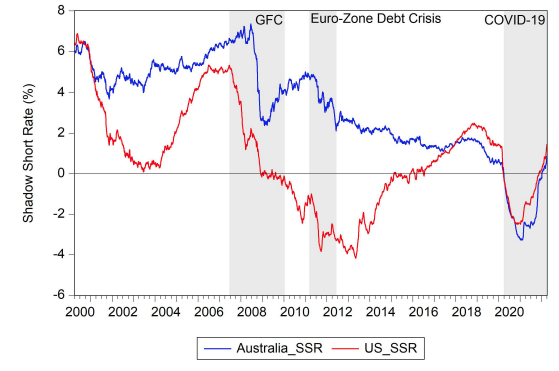
Fig 1. Time series plot of shadow short rate (SSR).
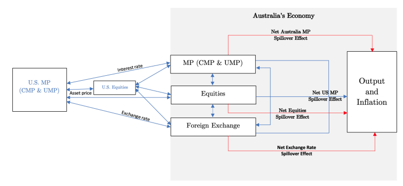
Fig 3. Flowchart of monetary policy spillovers.
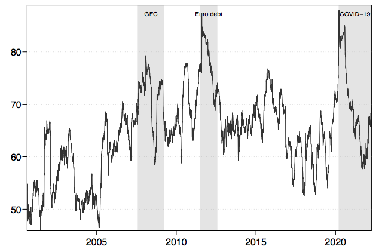
Fig 4. Dynamic total spillovers (TSI).
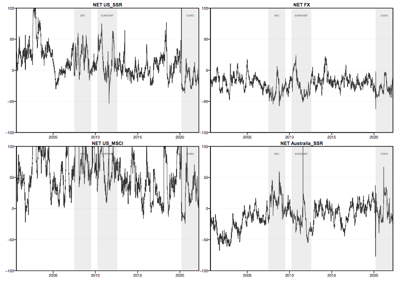
Fig 7. Dynamic net spillovers/spillbacks (NSI)—interest rate, FX and MSCI-US.
Theoretically, it is well argued that environmental factors affect the growth of the tourism industry; however, from an empirical perspective, some gaps still exist in the literature. We empirically examine the effect of carbon dioxide (CO2) and particulate matter (PM2.5) emissions on tourist arrivals in a panel of G20 countries. Using annual data from 1995 to 2014 and a series of panel data models, our results suggest that the growth of both CO2 and PM2.5 emissions adversely affects international tourist arrivals. The results also show that the observed effect of CO2 emissions is more pronounced in developed economies, while the effect of PM2.5 emissions is stronger for developing economies. Given these findings, our study provides and discusses a number of policy and practical implications.
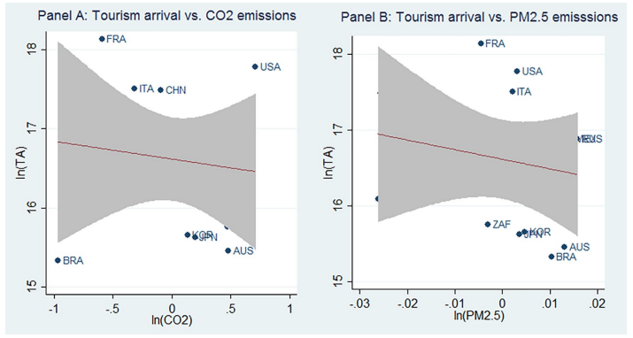
Figure 1. Association between tourism and air pollution.
The impacts of energy poverty on a range of development goals have been widely examined in the literature; however, how energy poverty affects public health has yet to be studied. Using annual data for a broad panel of 175 countries over the period 2000 to 2018, this paper investigates the effect of energy poverty on public health. To identify the causal effect of energy poverty on public health and tackle the issue of endogeneity, we rely on Oster's (2019) bound analysis and the system generalized method of moments (GMM) estimation. Our results show that energy poverty has a detrimental effect on public health. We also find that living standards can serve as a channel through which energy poverty influences health, and that countries with higher standards of living weaken the negative effect of energy poverty on public health. Our results are robust across various specifications and measures of health indicators. Our findings have important implications for policies in public health and transitions to renewable energy.
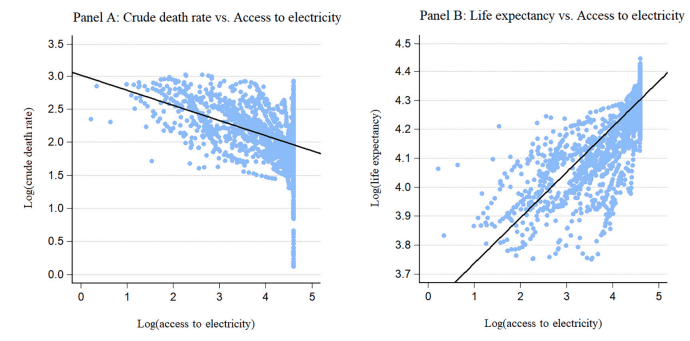
Fig 1. Energy poverty and life expectancy across countries.
Many studies address the convergence in per capita CO2 emissions. However, whether countries with lower initial per capita emission levels can “catch up” with more emission-intensive countries is unknown. Utilising historical CO2 emission data from 1907, this study investigates whether the per capita CO2 emissions of seven developing Asian economies; namely, China, Indonesia, India, Myanmar, the Philippines, Taiwan, and Thailand, catch up with or converge toward that of the US in the long run. We simultaneously examine the existence of per capita CO2 emissions convergence and the statistical contribution of the emissions drivers using the most recently developed covariate augmented Dickey-Fuller test, which allows for endogenous structural breaks. The main results show firm evidence of catching-up or relative/absolute convergence between the Asian economies and the US in terms of per capita CO2 emissions. Emissions drivers such as population and real GDP per capita growth may encourage the Asian economies to achieve and to maintain the long-run convergence toward the reference country.
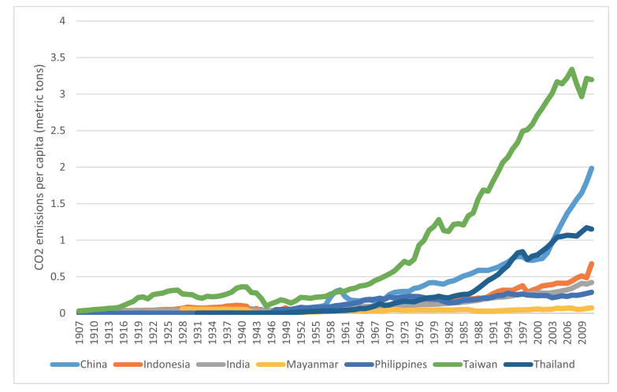
Fig. 1. CO2 emissions per capita in seven developing Asian countries (1907–2011).
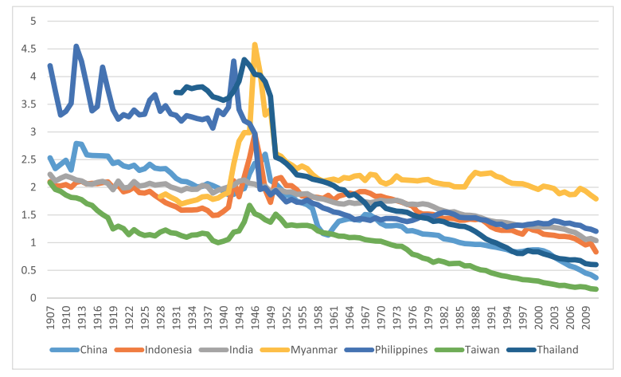
Fig. 2. Log of differences of per capita CO2 emissions (1907–2011).
The interplay between the stock market and the real economy is crucial in the various channels through which financial markets drive economic growth. In the current study, we investigate the effects of this relationship on the Chinese economy, which is the fastest growing and largest emerging economy in the world. The methodology includes unit root testing in the presence of structural breaks and the Autoregressive distributed lag (ARDL) model. The results of the analysis showed that the global financial crisis from 2007 to 2012 had a significant impact on both the real sector and the financial sector in China. Our findings also suggest that the Shanghai A share market has had a long-run negative association with the real sector of the economy; however, the magnitude of impact has been miniscule. These findings indicate that this negative relationship is proof of the so-called existence of irrational prosperity in the stock market and the economic bubble in China's financial sector. The findings did not show any evidence of a relationship between the stock market and the real economy in the short run. Toda Yamamoto causality test showed that economic growth has spurred the development of the Shenzhen B share market. Furthermore, the equally weighted index showed that stock market liquidity and stock market sectoral indices were alternative measures of stock market activities. The results were robust to the alternative measures of stock market activities. The results also indicate that state-owned monopolies play an important role in China's economic performance because they stimulate the economy in the short run.
Honors & Recognition
One of the 72 most cited articles at Economic Modelling
Selected for celebrating Economic Modelling as a top 20 economics journal in 2023
This paper examines the factors that predict an IMF bailout. In doing so, we use a large dataset from 1993 to 2021 with 6550 observations and 138 features and adopt recent advances in machine learning and artificial intelligence models such as tree-based, boosting and artificial neural network techniques. We find that apart from traditional indicators such as debt and macroeconomic factors, agricultural, energy, health and social factors are strong predictors of an IMF bailout. These factors have hitherto not received much attention in the literature.
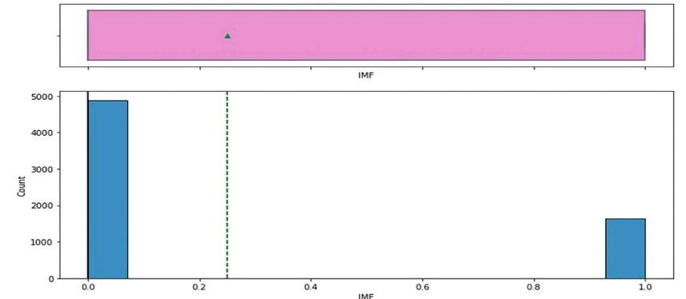
Fig. 1. Programme vs. Non-programme years.
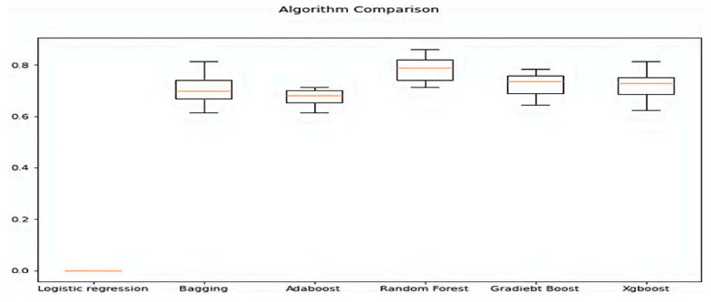
Fig. 2. Model predictions using the original data.
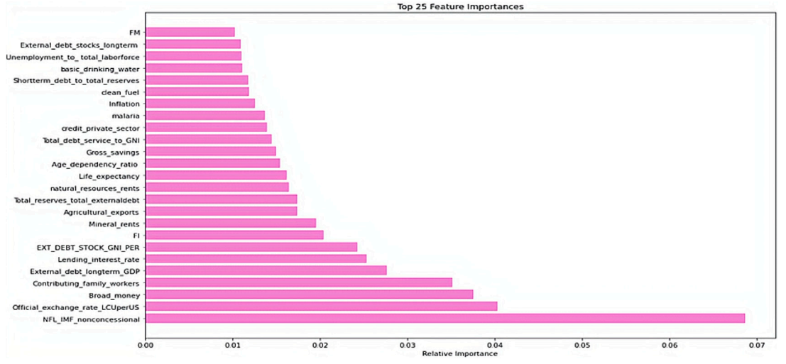
Fig. 6. Top 25 feature importances (Random Forest).
We examine hot-debated but underexplored questions of whether and how green strategies affect corporate green revenues. Using a generalized Difference-in-Differences (DiD) framework, we find that green strategies significantly enhance corporate green revenues in the presence of China’s Emission Trading Scheme (ETS) pilot. This is consistent with the Porter Hypothesis. Our mechanism analyses document that green strategies increase green revenues by improving green quality and catalyzing environmentally friendly transformation. This study has important implications for policymakers and practitioners, offering new insights into the intended consequences and real outcomes of environmental regulations.
Cross-country capital flows have been widely studied in the literature; however, why some countries may form more similar foreign investment portfolios than others has not been investigated. Using data for a broad panel of countries during the period 2002–2015, we adopt gravity equations to estimate cross-country foreign portfolio investment patterns. The main empirical results reveal that countries are more likely to form similar foreign portfolio investment patterns if: (i) countries are geographically closer; (ii) countries share the same official language; and (iii) countries adopt fixed exchange rate regimes.
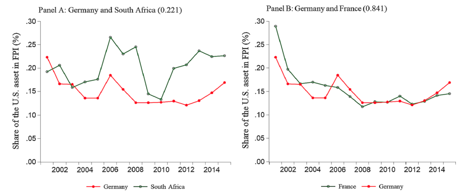
Fig. 1. Foreign portfolio investment, US assets (2001–2015).
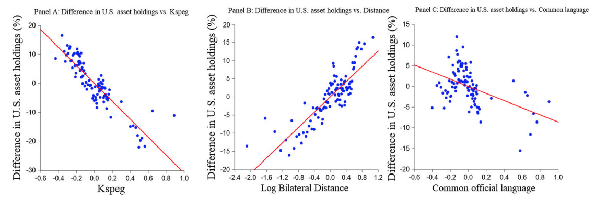
Fig. 2. US asset holdings versus exchange rate regime, bilateral distance, and common official language.
This study explores the use of energy sentiment as a predictive tool for forecasting oil price shocks by developing a Twitter-based energy sentiment index derived from 1,911,631 tweets. The sentiment index is utilized to predict three types of oil price shocks: demand, supply, and risk shocks, through various machine learning algorithms. Among these, the XGBoost model is found to outperform other models, achieving prediction accuracies of 60.20%, 62.00%, and 92.60% for demand shock, supply shock, and risk shock, respectively. Further model interpretation using Explainable AI reveals that the developed energy sentiment indicators contribute 29.33% to the oil price shock prediction, demonstrating the significant role of sentiment data in forecasting oil price fluctuations. These findings highlight the potential of leveraging real-time social media sentiment for improving oil price prediction models.
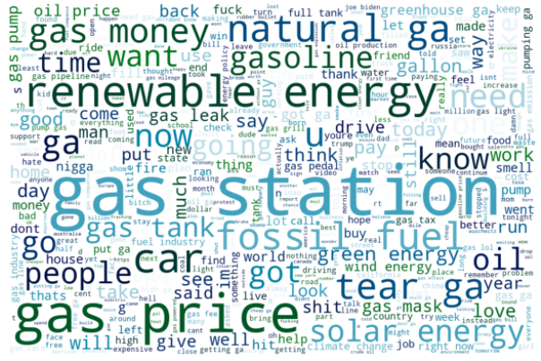
Fig 1. Energy sentiment index and crude oil price trends.
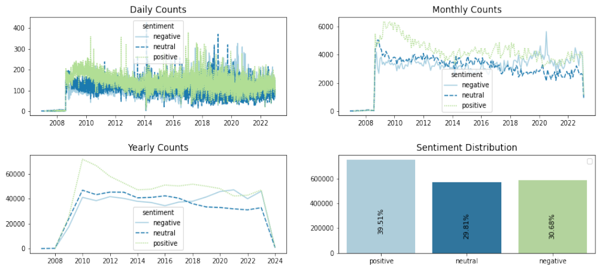
Fig 2. Prediction performance across machine learning models.
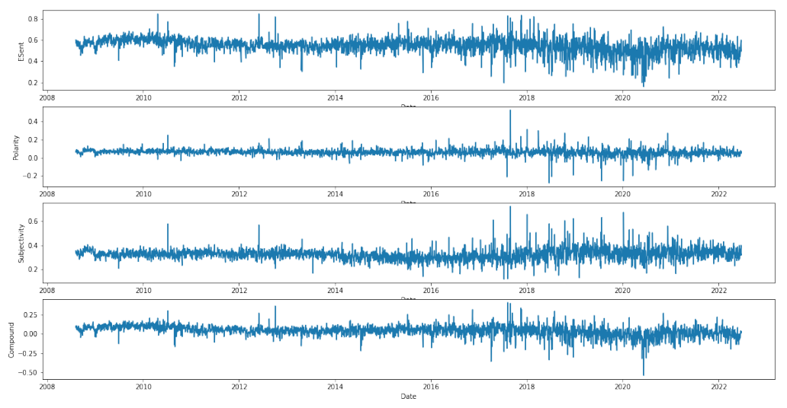
Fig 3. Feature importance from the XGBoost model.
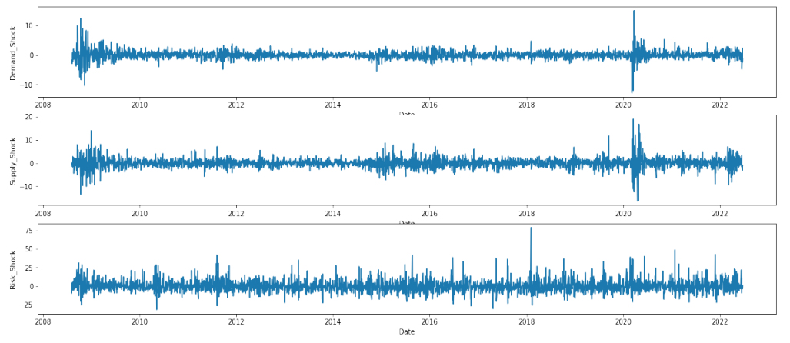
Fig 4. Prediction accuracy for demand, supply and risk shocks.
How stable is the relationship between oil prices and currency volatility?
We study eight advanced economies over March 2000–December 2024 using monthly volatility constructed from daily exchange rates.
A local-linear fixed-effects model allows associations with real oil price changes, oil variability, the VIX and US yield changes to evolve over time.
Dependence-aware simultaneous bands distinguish changing point estimates from supported sign changes.
The common oil coefficient crosses zero, but its baseline band includes zero throughout the interior and accommodates a constant coefficient.
Alternative benchmarks and conditioning sets reveal some negative episodes without establishing a positive-to-negative reversal.
The VIX association is more clearly positive and time-varying, and country oil slopes depart from their average.
Generalized responses from a monthly global-variable system indicate short-horizon financial-risk comovement; oil responses are less precise and sensitive to contemporaneous allocation.
Matched-sample local projections provide no stronger oil-sign evidence.
The results favour a conditional, currency-specific interpretation of oil–FX linkages, with a clear distinction between contemporaneous associations and joint market dynamics.
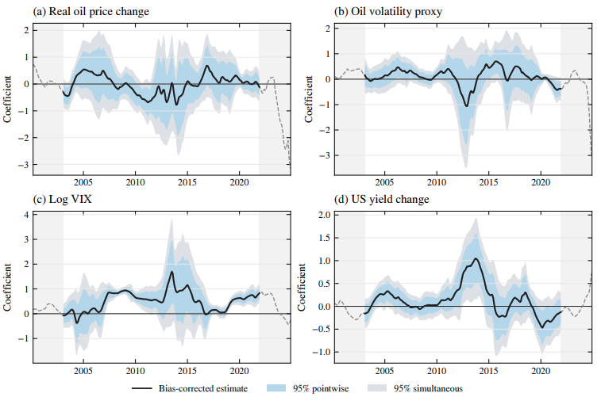
Fig 2. Time-varying conditional associations and uncertainty.
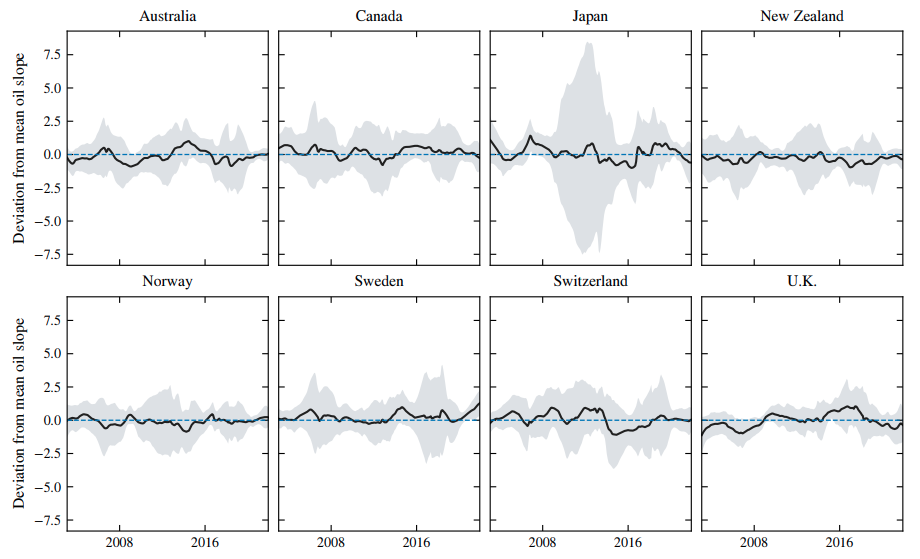
Fig 4. Country oil-change slopes relative to the cross-country average.
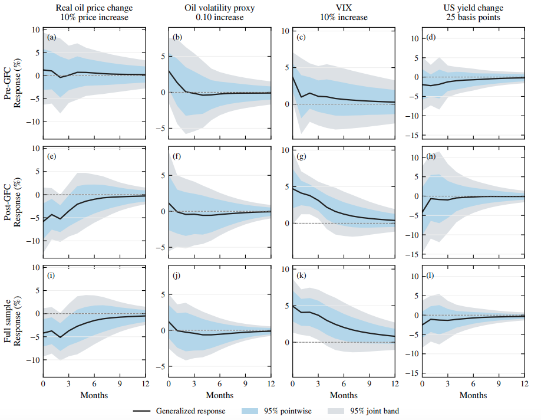
Fig 6. Joint dynamics of global conditions and average currency volatility.
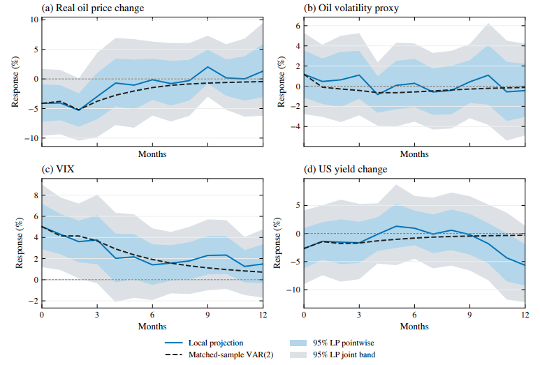
Fig 7. Local projections and VAR responses on an identical sample.